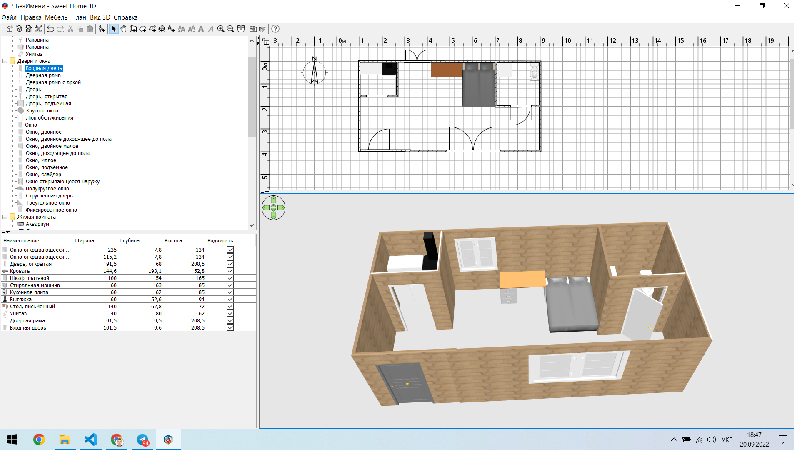

1.Запитання
Якщо оцінювати в загальному вигляді етапи побудови інформаційної та комп’ютерної моделі (без деталізації), то вони подібні. Оскільки комп’ютерна модель - це інформаційна модель, подана у знаковій формі та втілена за допомогою ПК.
2.Запитання
Програму https://www.biodigital.com. Я ознайомився з цим сайтом та зареєструвався у ньому.Можу віднести до графічної моделі оскільки на цьому сайті моделі є графічно створеними на компютері і бачимо ми їх у 3D вимірі .
3.Запитання
Програму https://sourceforge.net/projects/sweethome3d/. А ось я вам презентую програму в якій є і у 2D зображені і в 3D під назвою Sweet Home 3D . В цій программі ви зможете зробити власноруч проект будівлі зобразивши її у 2D і побачити у 3D.Можу віднести до графічної моделі оскільки на цьому сайті моделі є графічно створеними на компютері .

4.Запитання
Програму https://museums.authenticukraine.com.ua/ua/.. А це вам програма яка зображена у 2D зображені . А це вже сайт у котрому ви зможите інформаційно побувати у усіх музеях України .Можу віднести до графічної логічної моделі оскільки на цьому сайті моделі є графічно створеними та при натисканні на ту чи іншу модель буде вісвідчуватися та чи інша інформація .
5.Запитання
Програму http://www.ptable.com/?lang=uk# .. Це вам програма яка зображена у 2D зображені . А це вже сайт у котрому ви зможите інформаційно побувати у усіх музеях України .Можу віднести до графічно логічної моделі оскільки на цьому сайті моделі є графічно створеними та при натисканні на ту чи іншу модель буде вісвідчуватися та чи інша інформація .